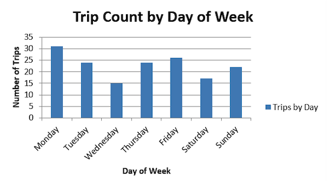
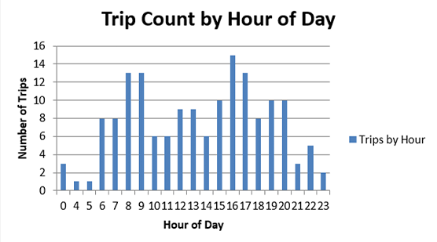
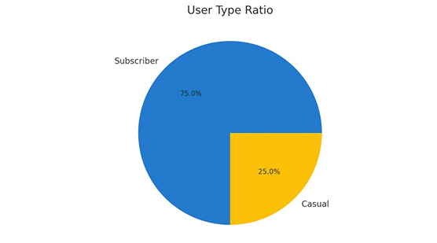
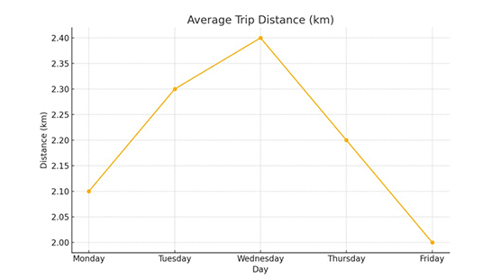

Dashboard Overview
This dashboard summarises electric bike usage trends in NYC using publicly available CitiBike data. It estimates trip volume, duration, and emissions saved by replacing car journeys.
Usage Trends by Time
Time-series chart showing hourly trip activity across weekdays and weekends.
User Type Ratio
Average Trip Distance
Methodology Summary
Data was cleaned and processed in Excel. Trip durations were calculated using time fields, distances estimated via the Haversine formula, and CO₂ savings computed by multiplying distance by 0.12 kg/km (EEA, 2023). Full dissertation and references available on request.